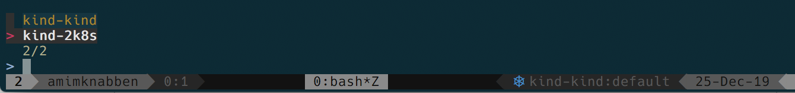

This post is for discussing more about Kind, setup some cluster examples with some particular customizations, and exlain what components it brings up.
The initial topics are a summary from Kind quickstart
To install Kind you should use:
$ brew install kindOr from source:
$ GO111MODULE="on" go get sigs.k8s.io/kind@v0.6.1To create a new cluster you must run:
# Default cluster name is kind
$ kind create cluster
Creating cluster "kind"
# A new cluster with context named 2k8s
$ kind create cluster --name 2k8s
Creating cluster "2k8s"Check the docker containers with "docker ps":
CONTAINER ID IMAGE COMMAND CREATED STATUS PORTS NAMES
3864ed104f05 kindest/node:v1.16.3 "/usr/local/bin/entr…" About a minute ago Up About a minute 127.0.0.1:64140->6443/tcp 2k8s-control-plane
55f43e6e63e1 kindest/node:v1.16.3 "/usr/local/bin/entr…" 2 minutes ago Up 2 minutes 127.0.0.1:64058->6443/tcp kind-control-planeYou can check these context on ~/.kube/config:
contexts:
- context:
cluster: kind-2k8s
user: kind-2k8s
name: kind-2k8s
- context:
cluster: kind-kind
user: kind-kind
name: kind-kind
current-context: kind-2k8sSome interesting tools like Kubectx can make your life easier to change between contexts and namespaces.

The flow is to start the nodes in docker, start the actions through the kubeadm with init, start the CNI and join the worker nodes in the cluster.
// Create node containers implementing defined config Nodes
ctx.Provider().Provision(status, ctx.Name(), opts.Config)
actionsToRun := []actions.Action{
loadbalancer.NewAction(), // setup external loadbalancer
configaction.NewAction(), // setup kubeadm config
}
actionsToRun = append(actionsToRun,
kubeadminit.NewAction(), // run kubeadm init
)
actionsToRun = append(actionsToRun,
installcni.NewAction(), // install CNI
)
actionsToRun = append(actionsToRun,
installstorage.NewAction(), // install StorageClass
kubeadmjoin.NewAction(), // run kubeadm join
waitforready.NewAction(opts.WaitForReady), // wait for cluster readiness
)
// Execute the actions in a new context.
for _, action := range actionsToRun {
action.Execute(actionsContext)
}The interesting part here is how customizable and adaptable is the project since the idea is to get an ephemeral cheap cluster for testing. This is a quicker alternative for Minikube, and can be used inside or outside a CI, for cases you don't need to keep or persist data and configuration for long time.
If you want to create other roles like workers you can use the following configuration. In this example we have 2 worker nodes and a control plane. Some other configurations from kubeadm can be passed via patches configuration:
config.yaml
--
kind: Cluster
apiVersion: kind.x-k8s.io/v1alpha4
nodes:
- role: control-plane
- role: worker
- role: worker
kubeadmConfigPatches:
- |
apiVersion: kubeadm.k8s.io/v1beta2
kind: ClusterConfiguration
metadata:
name: config
apiServer:
extraArgs:
"v": "6" Starting
$ kind create cluster --config config.yaml
$ docker ps
CONTAINER ID IMAGE COMMAND CREATED STATUS PORTS NAMES
492fe3c51dc1 kindest/node:v1.16.3 "/usr/local/bin/entr…" 11 minutes ago Up 10 minutes 127.0.0.1:64462->6443/tcp 3k8s-control-plane
f9db83f911cb kindest/node:v1.16.3 "/usr/local/bin/entr…" 11 minutes ago Up 10 minutes 3k8s-worker2
d089e0574d9d kindest/node:v1.16.3 "/usr/local/bin/entr…" 11 minutes ago Up 10 minutes 3k8s-workerLets confirm all the processes are up inside the nodes:
$ kubectl get nodes
NAME STATUS ROLES AGE VERSION
3k8s-control-plane Ready master 11m v1.16.3
3k8s-worker Ready <none> 10m v1.16.3
3k8s-worker2 Ready <none> 10m v1.16.3
Master:
/usr/bin/kubelet --bootstrap-kubeconfig=/etc/kubernetes/bootstrap-k
etcd --advertise-client-urls=https://172.17.0.4:2379 --cert-file=/e
/coredns -conf /etc/coredns/Corefile
kube-controller-manager --allocate-node-cidrs=true --authentication
kube-scheduler --authentication-kubeconfig=/etc/kubernetes/schedule
kube-apiserver --advertise-address=172.17.0.4 --allow-privileged=tr
/bin/kindnetd
Workers:
/usr/local/bin/containerd
/usr/bin/kubelet --bootstrap-kubeconfig=/etc/kubernetes/bootstrap-k
/usr/local/bin/kube-proxy --config=/var/lib/kube-proxy/config.conf
/usr/local/bin/containerd-shim-runc-v1 -namespace k8s.io -id 7d48b2
/bin/kindnetdTake a double check in the logs of APIServer, it should be verbose with -v=6, but you can find the flag in the /var/log/pods folder.
root@3k8s-control-plane:~# grep "v=\"6\"" /var/log/pods/kube-system_kube-apiserver-3k8s-control-plane_d07c7455999744ab92f2977ad0ce1317/kube-apiserver/0.log
2019-12-26T00:49:00.299202297Z stderr F I1226 00:49:00.298103 1 flags.go:33] FLAG: --v="6"Kubernetes manifests resides in etc/kubernetes/manifests, you can change the specification and the part of the system will be restarted.
apiVersion: v1
kind: Pod
metadata:
creationTimestamp: null
labels:
component: kube-apiserver
tier: control-plane
name: kube-apiserver
namespace: kube-system
spec:
containers:
- command:
- kube-apiserver
- ...
- --v=1Checking the logs again, the container id must change the process restarted should have the new value:
grep "v=\"1\"" /var/log/pods/kube-system_kube-apiserver-3k8s-control-plane_0797ccfaf5f7fdcb42366fbf39918d66/kube-apiserver/0.log
2019-12-26T01:02:18.63612087Z stderr F I1226 01:02:18.635346 1 flags.go:33] FLAG: --v="1"